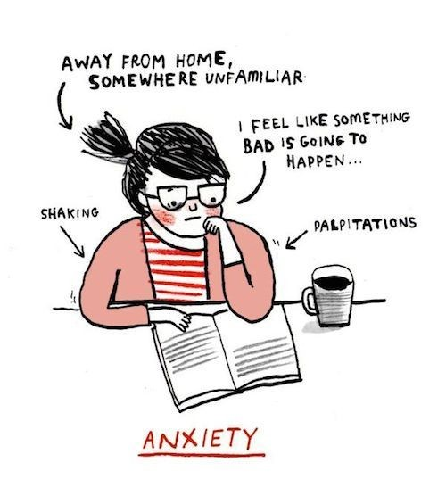
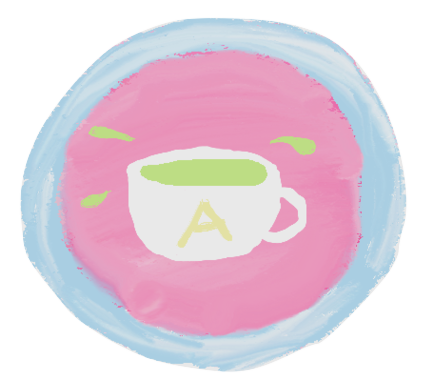
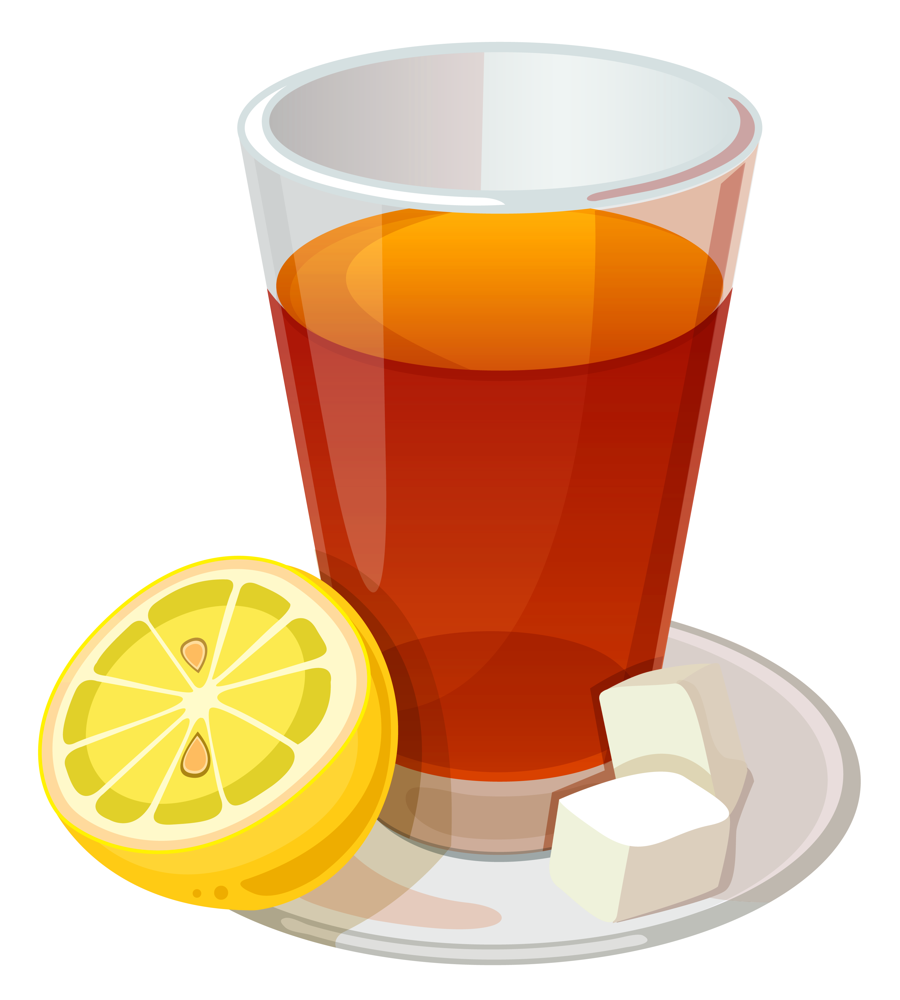
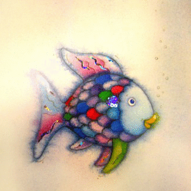

Mission Statement
Over 18% of adults and 25% of teens suffer from some form of anxiety, making anxiety one of the most widely experienced mental illness in the United States. AnxieTea was founded to help people better understand and deal with this wide-spread illness. Here at AnxieTea, we are dedicated in aiding all those affected by anxiety - those with the mental illness and those in their lives as well. We work to provide a multitude of resources that allow people to identify with the actual experience of having anxiety and educate themselves on the illness itself. By doing this, we hope to fulfil our goal of helping friends and family improve how they assist their loved ones work through the difficult symptoms of anxiety. AnxieTea is proud to provide the resources needed to help alleviate the experiences of anxiety.
Short Informational Video
Representational Drawings
Anxiety Information
Videos
Articles
Anxiety & Panic Disorders
"Everyone feels anxious now and then. It is a normal emotion. Many people feel nervous when faced with a problem at work, before taking a test, or making an important decision. Anxiety disorders are different, though. They can cause so much distress that it interferes with your ability to lead a normal life."
Anxiety Disorders and Anxiety Attacks
"It's normal to feel anxious when facing a challenging situation, such as a job interview, a tough exam, or a blind date. But if your worries and fears seem overwhelming and interfere with your daily life, you may be suffering from an anxiety disorder. There are many different types of anxiety disorders - and many effective treatments and self-help strategies. Once you understand your anxiety disorder, there are steps you can take to reduce your symptoms and regain control of your life."
"Many people with anxiety experience symptoms of more than one type of anxiety disorder, and may experience depression as well. It's important to seek support early if you're experiencing anxiety. Your symptoms may not go away on their own and if left untreated, they can start to take over your life."
"Anxiety disorders can become so severe that normal life and relationships become impaired. There are many types of anxiety disorders with their own unique sets of symptoms. Some of these disorders include panic disorder, obsessive-compulsive disorder (OCD), post-traumatic stress disorder (PTSD), social phobia (or social anxiety disorder), specific phobias, and generalized anxiety disorder (GAD)."
Having Anxiety vs. Feeling Anxious
Video on Feeling Anxious
This video talks about the natural emotion of anxiety, not the mental illness.
Articles
When Anxiety Becomes a Disorder
"Anxiety disorders, which center around excessive, irrational fear or dread, affect about 40 million adults in the United States. Physical symptoms may include a quickened heart rate or skipped heartbeats, rapid breathing, dry mouth, sweating, trembling, and dizziness."
Normal anxiety or an anxiety disorder?
"Anxiety is hardwired into all of our brains. It is part of the body's 'fight or flight' response. This prepares us to act quickly in the face of danger. It is a normal response to situations of uncertainty, trouble or feeling unprepared. However, if common everyday events bring on severe and persistent anxiety or panic that interferes with life, you may have an anxiety disorder."
Video Explanation
Anxiety Attacks vs. Panic Attacks
What is the Difference Between Panic Disorder and Social Anxiety Disorder?
"This is probably the most misunderstood subject in the area of anxiety disorders. Many clinicians and therapists have not been adequately trained to understand or diagnose anxiety disorders in general, and the clear-cut distinction between these two anxiety disorders is almost never understood." This article discusses the differences between the two disorders.
Anxiety Versus Panic Attacks: What's the Difference?
"The terms anxiety attacks and panic attacks are often used interchangeably to mean the same thing. In this sense, the difference is purely a matter of semantics. However, this is not true when we look at these terms from a clinical perspective, in which case panic and anxiety are defined by different features." This article outlines some major differences between anxiety and panic attacks.
Difference between Social Anxiety and Panic Disorder
"The distinction between social anxiety and panic disorder is probably the most misunderstood subject concerning the anxiety disorders. Many clinicians and therapists have not been adequately trained to understand or diagnose anxiety disorders in general -- and the clear-cut distinction between these two anxiety disorders is often misunderstood."
"My heart’s pounding, it’s hard to breathe. I feel like I’m going to go crazy or die. I have to get out of here NOW." This PDF, written by the Anxiety Disorders Association of America, discusses different aspects of anxiety and panic disorders like causes and treatment options.
Parents
Videos on Parenting Children with Anxiety
Articles
9 Things Every Parent with an Anxious Child Should Try
This article was written by Renee Jain. She gives readers a little insight on her childhood experience with anxiety. She also gives readers 9 ways to help a child who suffers from anxiety.
When reading this article, you'll find information on what makes children anxious and when those triggers can turn into a problem for them. Also, you'll be shown some of the signs of anxiety, why your child might be anxious, how to help your anxious child, and when you should get help.
Helping Children and Teens With Anxiety Disorders and Depression
In this article, you'll be presented with information from a public education session held by ADAA. New research on understanding anxiety disorders is discussed that children deal with daily. This article also children who suffer from depression.
Here is an expert from the article, which gives readers a little insight into the content of the article and the website from which the article was taken as a whole: "...this website is designed to help parents and their anxious children. Here, you will find practical strategies and tools to help you manage your child's anxiety, whether your child is just beginning to show symptoms, or has been diagnosed with an anxiety disorder. The first step is to find out more about anxiety -- how it looks, how it works, and how to recognize if it is problematic."
What to Do (and Not Do) When Children Are Anxious
This article was written by Dr. Clark Goldstein and it gives advice on how to help your child manage their anxiety. Furthermore it encourages parents to teach their children not to avoid certain situations just because it makes them feel anxious.
Anxiety in Children: How Parents Can Help
Child and family therapist Kathy Eugster, wrote this article to teach parents how to help their child take control of their anxiety. She explains what anxiety is and what can cause it. Also, how to identify anxiety in children, when it can become a problem, and more.
Friends
Videos on Helping Friends with Anxiety
Articles
This article is targeted towards readers who "have a friend(s) with an anxiety disorder, want to learn about what's helpful and what isn't, or want to learn about how to balance helping your friend and taking care of yourself."
How to Help a Friend Conquer Their Anxiety
"Let Them Know You Care: You can't know exactly what your friend is going through, but you can let them know you care. Tell them that you understand it must be awful for them, and let them know you're there for them."
36 Things People With Anxiety Want Their Friends to Know
Here's a list of 36 things you can use to help out your friend who might be suffering from anxiety.
20 Things Your Friends with Anxiety Wish You Knew
Educate yourself on anxiety so your friends with anxiety don't have to.
36 People Share How They’ve Helped Friends Through Their Anxiety
This list explains 36 ways in which people have already helped their friends who suffer from anxiety, and how it affected their friends. You can use these same tips to help your friend.
I Have Anxiety
Relaxing Game
Mouse over the green grass to find the hidden flowers. This works as a great distraction if you are feeling particularly anxious.
Things to do to manage your anxiety
- Maintain a healthy eating diet
- Exercise
- Join a yoga class or maybe try yoga on your own at home
- Start writing down your thoughts in a journal or a diary
- Listen to relaxing music or maybe some of your favorite tunes
- Practice meditation
- Go get a massage!
- Find a support system or join a support group
- See a therapist
- Try and distract yourself when you’re feeling anxious

Herbal Teas that help with AnxieTea :)
- Chamomile- Calming
- Green Tea- Relaxation and Alertness
- Kava- Controls anxiety symptoms
- Passionflower Tea- Similar to kava’s relaxation effect but not as strong
- Valerian Root Tea- Calming
- Peppermint Tea- Calming
- Lemon Brain Tea- Calming


Anxiety Management Videos
Articles
"Living with anxiety is never easy. Millions upon millions of people just like you struggle with anxiety daily, looking for ways to find any type of relief. Anxiety control is a long term process - not something that can be completed overnight. But there are ways to fight your anxiety that can be integrated into your life."
"When you're having a panic attack or anxiety attack, the symptoms - chest pain, flushing skin, a racing heart, and difficulty breathing - can make you feel like you're going to faint, lose your mind, or die. But the reality is, you won't. The key to surviving is to learn about anxiety attacks and practice the skills you need to get through them."
Panic attacks are widely experienced, so it is important to remind yourself that you are not alone. Positive self-talk is a crucial part in understanding and dealing with these attacks. Building a positive self-image and using self-talk is covered in this article.
Text Adventure
WARNING. This Text Adventure is designed to take the reader through the experience of an anxiety attack. Please do not participate in this game if you have anxiety.
Short Stories
Click on the story's title to expand and view the whole story.
"Anxiety"
Madison M.
The first time we met was near a bathroom at the theatre.
He was bent over the sink, jagged exhales coming out of pale lips, and when he looked up, his hands balled up into tiny fists, he asked if I ever got like this. I told him no, but I thought he was beautiful.
He laughed. It was shaky, and on a melodic beat, he collapsed, explaining that sometimes he just got these crippling sensations and that it was wracking through his skin and sometimes he just needed someone to grab him and make him remember that he was there or he would drift off like an untied boat in the ocean, so I did. You're going to be okay, I said, as I decided I wanted to hold both his body and his heart.
I held him then as he cried, and I held him six months after that, while he dug his nails into his wrists and whispered curses under his breath until the shopkeepers kicked us out for profanity. He told me the only time he wasn't afraid of loud noises was when I was yelling to him across the room, and the only time he loved not being able to breathe was when we kissed so hard his heart stopped.
We went back to the theatre yesterday, and I held him one last time while we say on the washroom counter, and I exhaled against his lips because his mouth couldn't do anything but tremble.He told me I love you, so much. I really do, but I just can't.
This morning I found myself trembling over my bathroom sink, and I finally get it, but this time there's no one to tell me I'm beautiful, and no shaking hands to hold my heart and remind me that I'm going to be okay.
"Anxiety Attack"
J.D.
Anxiety: n. A nervous disorder characterized by a state of excessive uneasiness and apprehension, typically with compulsive behavior or panic attacks.
Most people don't understand what anxiety truly is.
They use it to describe themselves in awkward or uncomfortable situations, but they don't know the extent of true anxiety. They don't know what it is like to go to school every day with an intense feeling of panic or loss of control.
Reader, I am trusting you. I am trusting you with my inner most thoughts and experiences. I am trusting you with all of my hopelessness. I am trusting you with everything personal I typically clutch close to my heart.
Don't let me down.
Most people do.
My name is Jesse, but the few people that do talk to me call me Jess. I am 16 years old, and have been diagnosed with clinical depression and severe anxiety.
Most people wouldn't know how messed up I truly am. I guess I put up a better front than I realize most of the time. I would typically be classified as the class nerd/clown.
I'm the girl that always has a smile on her face.
I guess when you fake being happy for long enough you can start to convince even yourself that you're not hurting inside.
And so I am starting my story on the pretense that you have not experienced some of the same things as I have, and before I begin my story, I must explain how I am affected by these, what may be considered, disorders.
It is vital to the story. Remember it.
I am being presumptuous, Reader, and assuming that you have been lucky enough to not experience as much anxiety as I have thus far in my life.
I am assuming that you live a happy life, an easy life. And that may not be necessary, and I wish not to be offensive.
Rather, I hope to educate you of my own situation, as I have no one else to educate. As my anxiety cripples me when I attempt to share these thoughts with anyone else.
But, you are just a creation of my own imagination, and so I know my thoughts are safe with you.
And as it vital to the story, and Reader it is very vital, I hope you do not mind if I proceed to explain my own experience with anxiety.
Keep this in mind as my story proceeds, it is very important.
I will paint an image for you so you may understand.
The one person that knows of my situation, the only person I have ever trusted with this knowledge, did not understand how I could have anxiety.
I function fairly well, and seem to be able to communicate.
And perhaps I am lucky to be able to do so.
Or perhaps I have taught myself to act as if I know how to act in social situations. Perhaps it is simply a mask meant to hide what I am feeling inside.
No matter how well I function, I am always anxious.
I always feel as if there is some invisible man gripping and pulling at my chest.
We participate in a daily tug-of-war tournament.
He usually wins.
Often I experience a shortness of breath. I can't seem to be able to get enough air in, which sets the anxiety off more.
I have a constant feeling of panic planted deep in my chest, worrying if I appear to be fine, if anyone can see past the facade.
In school, I lose myself in my work.
It is the only thing I can do to not focus on the fact that I have been stuffed in a classroom with other people for 85 minutes at a time.
It is the only thing I can do to pretend as if the invisible man isn't slowly stealing all of my breath.
It is all I can do to pretend that I am not so close to so many people, that the walls aren't caving in at a slow rate, making the room grow smaller and tighter in every moment.
It is the only thing I can do to distract me from the fact that I am close enough to the person next to me that our legs are almost touching.
It is the only thing I can do to pretend that my claustrophobia isn't starting to rise again, that I feel as if there are too many people in too small of a space.
It shouldn't bother me, but it does. It doesn't appear to bother anyone else around me, so why does it add to the deep pit that rests constantly in my chest?
And with the anxiety comes the headaches.
With the stress of making sure that no one can tell that I am different, not normal, it is a given that there would be headaches to accompany them.
At this point, I barely notice them. They are just a constant, slow dull pain that expands across my whole skull.
As my day progresses, the deep feeling in chest grows slowly but surely.
Am I happy enough?
Am I smiling enough yet? Did I have a deep expression on my face earlier? Oh god, I had a deep expression on my face earlier.
Did anyone notice? I can't let anyone notice. No one can know how I feel. No one can know what is inside. What if they start asking questions?
What if I can't answer them? What then? Am I acting normal enough? What if they think I'm not normal? What if they think I'm acting weird?
Will they not talk to me? Will they start asking questions? I can't answer their queries. I can't let them know. Am I sitting too straight? Is it normal to sit this straight?
Am I slouching too much? There's that look again! No, Sam, smile now. Is that smile too big? Is it not big enough? Oh god, am I acting weird now?
Are they going to start asking questions? I can't answer their questions.
They can't know.
And so the day progresses and these thoughts constantly rattle around my head and the pit grows deeper and wider. And I continually grow more worried, more stressed, more anxious.
Sometimes it grows unbearable, and I have to remind myself that I am not allowed to break down in public. The panic sets in, and I try to push it away, to no avail.
And as the anxiety grows worse, so does my communication. Slowly, I lose the ability to properly convey my thoughts. My words become all jumbled and my sentences lose structure.
This only worsens my anxiety, which in turn worsens my communication. Soon, the stuttering starts.
It usually isn't so bad, only when I get really flustered, but recently it has grown to be worse than I am used to.
In class, I try to pronounce a word several times to no avail. A laugh escapes my lips as I try to talk around it, only to stumble over my own words and begin the stuttering again.
Tears well in my eyes, but I hide them and refuse to let them fall. No one can know I am weak. They can't ask questions. They can't know.
And soon I feel the stares of my classmates on my face as I avoid their curiously judgmental gazes and attempt to share what I had meant to say.
On a good day, I wait until I get back to the privacy of my own home before I break down and start crying,
allowing the panic to flow through me until it subsides enough for me to put myself back together, to place the smile back on my face.
On a bad day, I just try to get to my car.
And so I fall asleep, and wake up, and restart the cycle again.
"My Mask"
J.D.
I painted a mask for you
All rosy and perfect
It wasn't me though
It was too beautiful
Too unbroken
Too perfect
And I hoped maybe you would unmask me
Look beneath
See that I wasn't beautiful
See that I was broken
See that I was imperfect
But you didn't love me
You loved the mask of the girl that I wished I could be
And so you didn't even try to help me take it off
And I couldn't blame you
"The Golden Girl"
J.D.
The golden girl
Glittered and gleamed
But she was all but dead inside
The golden girl
Shone so bright
But she just wanted to hide
The golden girl
Was great and smart
But she felt so small
The golden girl
Was beautiful
But she never saw it at all
The golden girl
Was happy
But she always wanted to cry
The golden girl
Was the best
But she really wished to die
The golden girl
Was perfect
But she wasn't
Because she wasn't actually gold
And she cracked under pressure
"The Anxiety Monster"
J.D.
The Anxiety Monster is a little guy,
But he is mean and strong.
He burrows into his victim’s chest
And stays there all day long.
He slowly applies pressure to their heart and lungs
And his work there is never done.
The Anxiety Monster sits on his victim’s shoulder,
Whispering all of your fears into your ear.
The Anxiety Monster hides in your eyes
And makes you blind.
He changes your view to show a multitude of stares,
Even when they aren’t really there.
He nests into your ears,
And warps everything you hear.
The Anxiety Monster may seem small and harmless to others,
But you know that it is much more than that.
The Anxiety Monster is always with you.
He forces you to stand still as you watch your life go by
As a spectator.
He will never leave
You are his home,
From your shaking hands to your fast beating heart.
From the sweat collecting on your forehead to your labored breathing.
He is too fond of his home,
And he will never leave.
He will always be there with you,
And perhaps he is the only one.
"My Letter to Anxiety"
Alexa S.
Anxiety,
You're the reason I need to shake my leg or shake my fingers. You're the reason I have this overwhelming fear all the time. You're always there in the center of my mind, never leaving.
I can't escape the walls you've put around me. I want out, but you've trapped me. I've tried calling for help, but you mute me when I speak.
The voice I've been holding inside tries to find it's way out, climbing up my throat, threatening to spill. When you finally let me out, I look at others differently.
They make me uncomfortable... Too uncomfortable. You won't let me see them in the same way. I've known these people my whole life, and suddenly... I don't know them anymore.
You lock me up so tight that I've lost myself. So far deep into loneliness that the only thing I know is silence. To break those walls down, is what causes depression.
I try so hard to demolish what keeps me so deep inside, only to be pushed deeper. You knocked on a door that I can no longer answer. Once you came in, you boarded it up, giving me no hope that you'll ever leave.
A constant reminder that I'm never going to be truly alone. I'll always have you in my mind, telling me how to think. I want the scars you've given me to disappear.
They are a constant reminder of who I have become and what you've done to me. Pushing me so far, that I've fallen into a puddle of self hate. Others have started to hate me too.
It seems like you stop time for a split second, allowing me to see what they see in me. I can't blame them, Because you've forced me into a place that I didn't agree to check into.
They keep me here to destroy you. But, you were too powerful for even the professionals to defeat. I try to sleep here, but you keep me awake with racing thoughts.
They're running so fast that I cannot possibly keep up. When they pass me, they knock me down. Again, and again, so that I can't get up. I wish to stand again.
You attack me, clawing at my throat, preventing me from breathing. You make giving up seem like an easier option when you try to end me. Who do I go to when I would rather end myself first?
Love, The one you destroyed.
About Us

Elizabeth Petersen
Why Girls Who Code? I was first introduced to Computer Science in my junior year of high school. I knew it was something I wanted to explore more, as I developed an immediate interest in it, and Girls Who Code was the perfect opportunity for me.
Why an Anxiety Website? I have some really close friends who suffer from anxiety and have seen how it affects them. I have also seen how others respond to someone suffering from an attack, and I realize that if people were a bit more educated on the mental illness, a more comfortable environment could be created for everyone involved.
What's your spirit animal? Rainbow Fish.
Brittany Hosty
Why Girls Who Code? I’ve always been interested in computers and technology. Growing up, I was always tinkering with (or as my siblings would describe it- breaking) any device I could get my grubby little hands on. When I started high school, I kept this interest. I joined my school’s SWATT (Students Working to Advance Trinity Technology) team as well as our Girls Who Code club. I enrolled in one of the only advanced technology-based courses to learn more about technology and how people interact with it. This course, ITGS- or Information Technology in a Global Society- teaches the connection between morality and computers. I’ve worked more directly with hardware, but I wanted to experience the software that is used in these devices as well. I took some online coding courses, and began to grasp the concept little-by-little. When my science teacher pushed me to apply for the program, however, I was actually slightly reluctant. I didn’t know if I was willing to give up the majority of my summer. However, after seven weeks, I am coming out of Girls Who Code with the ability to code in nine different languages and a deeper love for computer science.
Why an Anxiety Website? I myself experience social anxiety. I am not as affected as most, but it is definitely with me during every decision I make. It’s hard for me to put myself out there, and I often have to almost physically push myself out of my comfort zone as not to miss out on experiences. My little brother also deals with severe anxiety. It has been incredibly hard for him lately, and at some points it’s so bad he can’t even go to school. My family and his friends don’t exactly know how to deal with this, or how to help. They are almost as lost as he is in the situation. I’d like to think that if they all had a resource like this, maybe it would be easier for him to manage his anxiety.
What's your spirit animal? Baby Dory.
Alexis VanderWilt
Why Girls Who Code? Girls Who Code is an amazing program that allowed me to decide whether or not I was interested in Computer Science. I got to meet some amazing girls who became my second family. We learned lots and we had a lot of fun while doing it.
Why an Anxiety Website? I, personally, suffer from panic disorder. I wanted to create a website that would help other people understand what I go through and help other people like me have a safe place to go.
What's your spirit animal? Stitch.
Candace Jennings
Why Girls Who Code? I choose GCW because I wanted to experience different educational paths in order to choose my major for college next year.
Why an Anxiety Website? I decided to collaborate with others in building the anxiety site because I have many problems with anxiousness. I am very adamant when it comes to figuring out how to solve this problem. I want to be able to help others through anxiety, which comes from anxiousness.
What's your spirit animal? A Dolphin.

Imani Wagner
Why Girls Who Code? I chose Girls Who Code because it was something I had never found interest in, and I didn’t know much about Girls Who Code or coding. It was something new I wanted to try.
Why an Anxiety Website? I decided to be apart of creating the anxiety website because anxiety is something that I believe the world should learn more about. I also believe that people should know how to help themselves with and others.
What's your spirit animal? A Lion.
Videos
https://www.youtube.com/watch?v=32K-rEIbBgE
https://www.youtube.com/watch?v=7GvcP8ekLNw
https://www.youtube.com/watch?v=LuhCwoAi4h4
https://www.youtube.com/watch?v=aVvTEzvAtHo
https://www.youtube.com/watch?v=jEkFp0Ux4OQ
https://www.youtube.com/watch?v=Bv5JMcUKSPI
https://www.youtube.com/watch?v=nCgm1xQa06c
https://www.youtube.com/watch?v=K5_x0ImIR8A
https://www.youtube.com/watch?v=xI3sVuH7rms
https://www.youtube.com/watch?v=PwT9V82wwuQ
https://www.youtube.com/watch?v=mW0gj3n4D1Q
https://www.youtube.com/watch?v=wBwa4Mphf08
https://www.youtube.com/watch?v=Tsy01iN1Bcc
https://www.youtube.com/watch?v=zzeGF_PrHAI
Articles
http://www.webmd.com/anxiety-panic/guide/mental-health-anxiety-disorders
http://www.helpguide.org/articles/anxiety/anxiety-attacks-and-anxiety-disorders.htm
https://www.beyondblue.org.au/the-facts/anxiety/types-of-anxiety
http://anxietynetwork.com/content/differences-between-panic-and-social-anxiety
https://www.verywell.com/anxiety-attacks-versus-panic-attacks-2584396
http://www.webmd.com/anxiety-panic/guide/anxiety-panic-guide-symptoms-types
https://socialanxietyinstitute.org/differences-between-social-anxiety-and-panic-disorder
https://www.adaa.org/sites/default/files/panic_adaa.pdf
http://www.calmclinic.com/anxiety/stop-anxiety-quickly
http://www.everydayhealth.com/pictures/how-to-end-an-anxiety-attack/
http://pe2000.com/panic/pan-act/pan-reassur/
http://www.nhs.uk/conditions/stress-anxiety-depression/pages/anxiety-in-children.aspx
https://www.adaa.org/living-with-anxiety/children/treatment-public-ed-handouts
https://www.anxietybc.com/parenting/parent-child
http://childmind.org/article/what-to-do-and-not-do-when-children-are-anxious/
http://kathyeugster.com/articles/article004.htm
http://au.reachout.com/helping-a-friend-with-anxiety
http://anxietyslayer.com/journal/how-to-help-a-friend-conquer-their-anxiety.html
http://themighty.com/2015/11/36-things-people-with-anxiety-want-their-friends-to-know/
http://www.puckermob.com/lifestyle/20-things-your-friends-with-anxiety-wish-you-knew
Photos
http://www.learning-mind.com/this-funny-comic-perfectly-captures-how-social-anxiety-feels/
http://www.smosh.com/smosh-pit/photos/17-illustrations-perfectly-capture-anxiety
http://www.undergroundhealth.com/illustrations-show-exactly-what-its-like-to-have-a-panic-attack/
http://giphy.com/search/stitch
http://www.98fm.com/New-Finding-Dory-Clip--Meet-Baby-Dory-
http://giphy.com/gifs/fish-rainbow-marcus-pfister-3M0ViM9ihst1u
http://animal-dream.com/dolphin.html
http://clipartix.com/yoga-clipart/
http://www.clipartpal.com/clipart_pd/education/openbook1.html
http://www.clipartkid.com/rock-music-clipart-rock-star-guitar-clip-art-yikq5xnie-png-L2BNrQ-clipart/